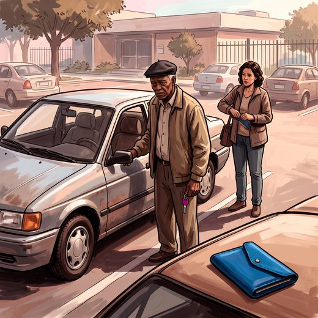

Consulta rápida à beira do leito
Condutas, doses e interações.
Referências da aula · 6
- Pomidor A, editor. Clinician's Guide to Assessing and Counseling Older Drivers. 4th ed. New York: American Geriatrics Society; 2019.
- Iverson DJ, Gronseth GS, Reger MA, Classen S, Dubinsky RM, Rizzo M. Practice parameter update: evaluation and management of driving risk in dementia. Neurology. 2010;74(16):1316-24. PMID 20385882. doi:10.1212/WNL.0b013e3181da3b0f.PubMedDOI
- Chihuri S, Mielenz TJ, DiMaggio CJ, Betz ME, DiGuiseppi C, Jones VC, et al. Driving cessation and health outcomes in older adults. J Am Geriatr Soc. 2016;64(2):332-41. PMID 26780879. doi:10.1111/jgs.13931.PubMedDOI
- Livingston G, Huntley J, Liu KY, et al. Dementia prevention, intervention, and care: 2024 report of the Lancet standing Commission. Lancet. 2024;404(10452):572-628. PMID 39096926.PubMed
- Brucki SMD, Nitrini R, Caramelli P, Bertolucci PHF, Okamoto IH. Sugestões para o uso do mini-exame do estado mental no Brasil. Arq Neuropsiquiatr. 2003;61(3B):777-81. PMID 14595482.PubMed
- Freitas EV, Py L, organizadores. Tratado de Geriatria e Gerontologia. 5ª ed. Rio de Janeiro: Guanabara Koogan; 2022.